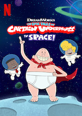

The Epic Tales of Captain Underpants in Space

Best friends George and Harold — along with their classmates and tyrannical principal — are recruited for a mysterious mission in outer space.
公開年: 2020
作品詳細を見る
自動的にリダイレクトしています...